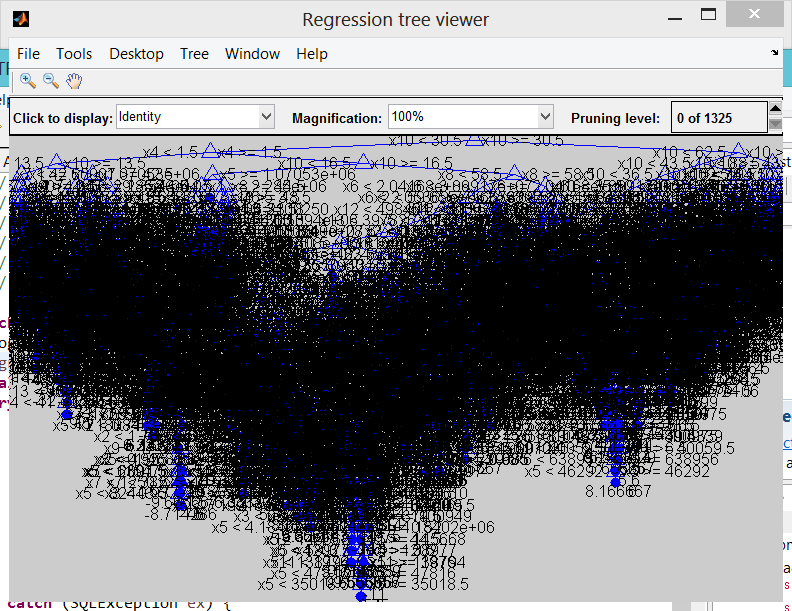
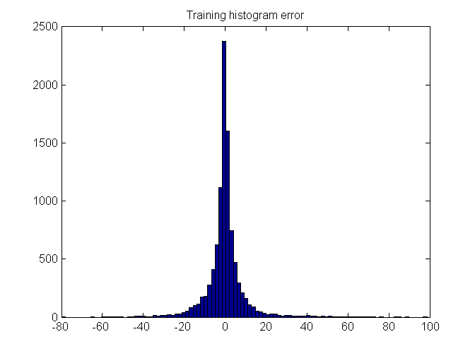
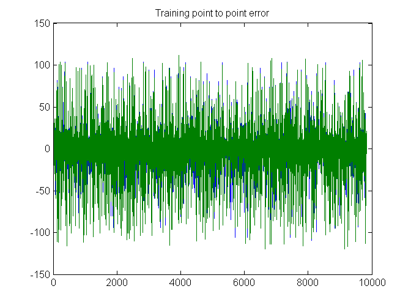
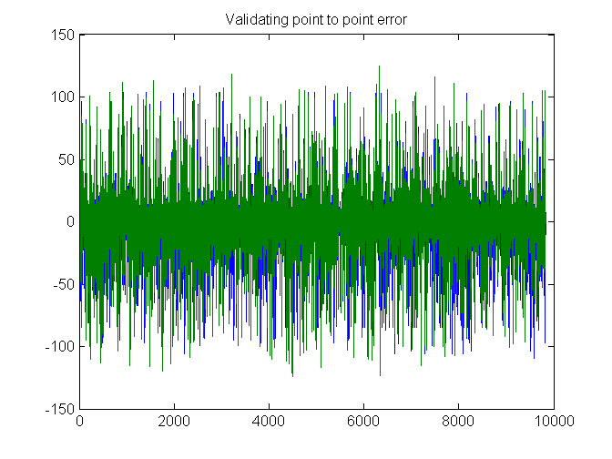
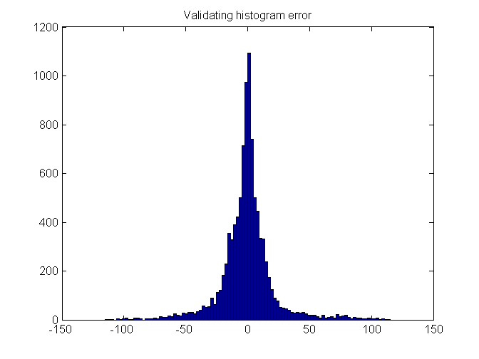
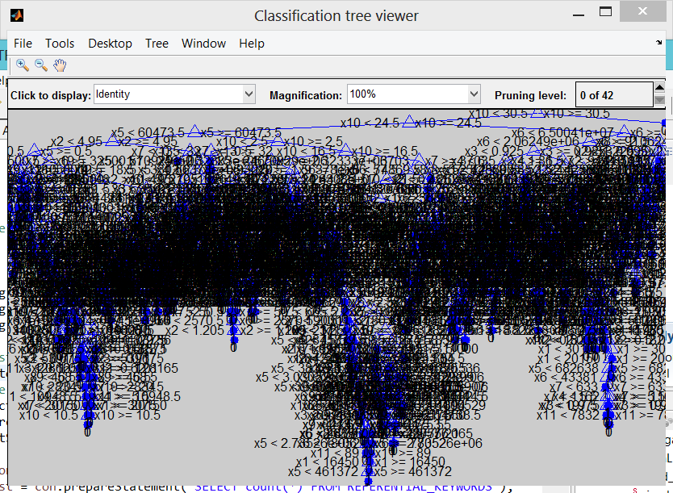
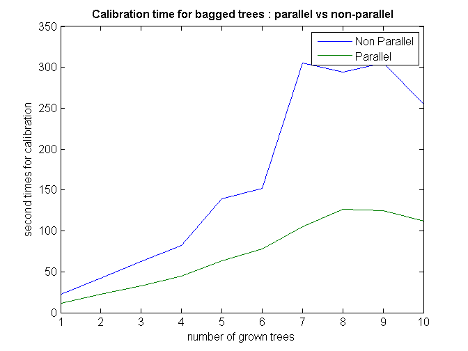
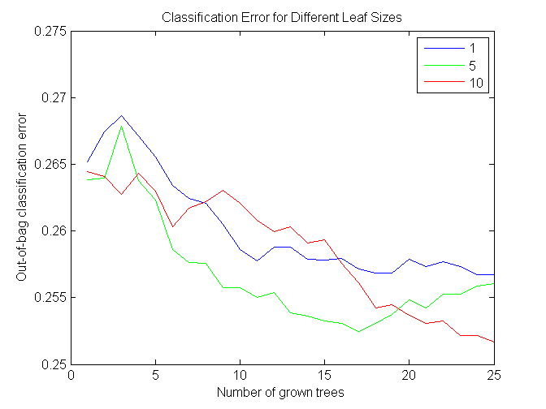
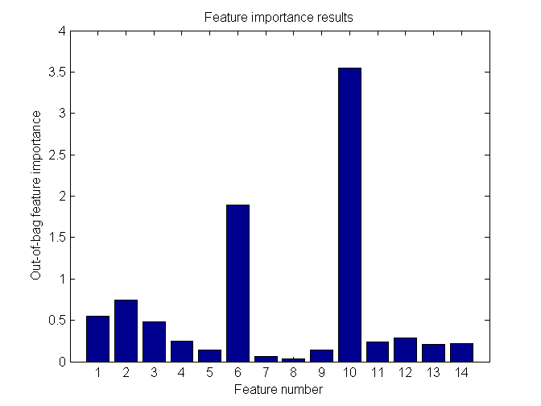

Importing data from the CSV file
penguin = importfile('penguin.17-10-2014-20-10-2014-utf8.csv'); save('penguin.mat');
Contents
- Loading data
- Data displaying
- Continuous prediction
- Predictor and output matrix building
- Single regression tree
- Tree performance on validating and training set : pruning the tree
- Discontinuous prediction
- Predictor and output matrix building
- Single regression tree
- Tree performance on validating and training set : pruning the tree
- Bootstrapped aggregated tree
- Parallel bootstrapped aggregated tree
- Performance computation
- Which leaf size is the best for the tree : once again prune the bagged trees
- Feature selection
Loading data
load('penguin.mat');
Data displaying
disp(penguin(1:20,:));
Keyword KeywordVolume KeywordCpc KeywordCompetition
____________________ _____________ __________ __________________
'"assurance auto"' 1.1e+05 12.53 1
'"assurance auto"' 1.1e+05 12.53 1
'"assurance auto"' 1.1e+05 12.53 1
'"location voiture"' 2.46e+05 4.92 0.98
'"location voiture"' 2.46e+05 4.92 0.98
'"location voiture"' 2.46e+05 4.92 0.98
'"location voiture"' 2.46e+05 4.92 0.98
'"location voiture"' 2.46e+05 4.92 0.98
'"location voiture"' 2.46e+05 4.92 0.98
'"location voiture"' 2.46e+05 4.92 0.98
'"banque en ligne"' 33100 29.92 0.98
'"banque en ligne"' 33100 29.92 0.98
'"banque en ligne"' 33100 29.92 0.98
'"banque en ligne"' 33100 29.92 0.98
'"banque en ligne"' 33100 29.92 0.98
'"banque en ligne"' 33100 29.92 0.98
'"banque en ligne"' 33100 29.92 0.98
'"banque en ligne"' 33100 29.92 0.98
'"banque en ligne"' 33100 29.92 0.98
'poker' 60500 16.45 0.87
Site Pr Alexa
__________________________________________________ __ __________
'www.auto.amv.fr' 4 2.3413e+05
'assurance-auto.comprendrechoisir.com' 4 7123
'www.ganassurances.fr' 4 4.286e+05
'www.fr.lastminute.com' 6 3382
'www.driiveme.com' 4 4.6852e+05
'www.hibiscuslocation.com' 2 NaN
'www.e-leclerc.com' 5 13846
'www.jumbocar.com' 4 1.4696e+06
'location-voiture.voyages.carrefour.fr' 0 NaN
'europcar-guadeloupe.com' 5 3.4055e+06
'www.guidebanque.com' -1 8.346e+05
'www.banquesenlignecomparatif.fr' 2 1.5754e+06
'co.lm.xr.sa.zq.tb.zb.lt.si.ar.30.french.taggy.cz' -1 96644
'www.banque-en-ligne.info' 1 0
'www.ca-nmp.fr' 4 77289
'www.lefigaro.fr' 8 521
'www.cmb.fr' 5 19457
'www.barclays.fr' 4 1.3316e+05
'www.bnpparibas.net' 6 2422
'www.jeux.fr' 4 7625
RefPages RefDomains CitationFlow TrustFlow YesterdayPos
__________ __________ ____________ _________ ____________
11996 19 43 38 25
402 78 37 28 30
1.1316e+05 314 46 48 33
4.7597e+05 1894 44 42 19
1821 164 44 25 25
252 50 28 31 27
1.5921e+06 4444 49 55 29
2939 184 39 29 30
27683 6 29 22 34
38425 121 30 27 112
51734 54 44 34 8
25884 72 47 32 10
0 0 0 0 15
11 6 20 16 18
58530 330 43 45 19
5.705e+06 60623 60 66 30
3.0708e+05 719 46 49 32
23923 567 45 49 33
5.7689e+05 3198 46 39 115
75098 1086 50 57 15
TodayPos Change Change_abs ExactAnchorsRefDomains
________ ______ __________ ______________________
32 -7 7 2
38 -8 8 20
23 10 10 3
30 -11 11 3736
20 5 5 0
32 -5 5 68
NaN NaN 102 10114
17 13 13 8
25 9 9 0
21 91 91 0
NaN NaN 123 10
105 -95 95 10
NaN NaN 116 0
36 -18 18 3
24 -5 5 0
17 13 13 4.8837e+05
22 10 10 1141
28 5 5 1
8 107 107 5698
9 6 6 4
ExactAnchorsRefPages ContainingAnchorsRefDomains
____________________ ___________________________
127 4
58 64
683 9
4.7295e+05 3736
0 2
289 68
1.6805e+06 10114
33 29
0 0
0 7
37391 23
4094 31
0 0
7 3
0 16
6.1721e+06 4.8837e+05
3.7362e+05 1141
1 2
5.7992e+05 5698
9 23
ContainingAnchorsRefPages
_________________________
130
122
1197
4.7295e+05
7
289
1.6805e+06
278
0
20
46531
16474
0
7
84
6.1721e+06
3.7362e+05
2
5.7992e+05
36
Continuous prediction
Predictor and output matrix building
predictor matrix
X = [penguin.KeywordVolume penguin.KeywordCpc penguin.KeywordCompetition penguin.Pr penguin.Alexa penguin.RefPages penguin.RefDomains penguin.CitationFlow penguin.TrustFlow penguin.YesterdayPos penguin.ExactAnchorsRefDomains penguin.ExactAnchorsRefPages penguin.ContainingAnchorsRefDomains penguin.ContainingAnchorsRefPages];
% output vector we try to forecast penguin.TodayPos penguin.Change penguin.Change_abs
Y = penguin.Change;
Single regression tree
pt = cvpartition(Y,'holdout',0.5); % Extract predictors and responses for both sets Y_t = Y(training(pt)); X_t = X(training(pt),:); Y_v = Y(test(pt)); X_v = X(test(pt),:); t = classregtree(X_t,Y_t); % See tree view(t)
Warning: Ignoring rows in GROUP with missing values. Warning: The training set does not contain points from all groups.
Tree performance on validating and training set : pruning the tree
How well did the single tree perform on the training set very well but overfit the noise
predY = t(X_t); disp('Full tree training set') training_residus = predY-Y_t; figure; hist(training_residus,100) title('Training histogram error'); figure; plot(1:length(predY),predY,1:length(Y_t),Y_t); title('Training point to point error'); errpct = abs(training_residus)./Y_t*100; MAE = mean(abs(errpct)); disp(MAE); % Calculate the single tree's predictions on the validating set... predY = t(X_v); disp('Full tree validating set') figure; plot(1:length(predY),predY,1:length(Y_v),Y_v); title('Validating point to point error'); validating_residus = predY-Y_v; figure; hist(validating_residus,100) title('Validating histogram error'); errpct = abs(validating_residus)./Y_v*100; MAE = mean(abs(errpct)); disp(MAE);
Full tree training set 57.4395 Full tree validating set 142.7363   
Discontinuous prediction
Predictor and output matrix building
predictor matrix
X = [penguin.KeywordVolume penguin.KeywordCpc penguin.KeywordCompetition penguin.Pr penguin.Alexa penguin.RefPages penguin.RefDomains penguin.CitationFlow penguin.TrustFlow penguin.YesterdayPos penguin.ExactAnchorsRefDomains penguin.ExactAnchorsRefPages penguin.ContainingAnchorsRefDomains penguin.ContainingAnchorsRefPages];
% output vector we try to forecast penguin.TodayPos penguin.Change penguin.Change_abs
Y = penguin.Change <= -7;
Single regression tree
pt = cvpartition(Y,'holdout',0.5); % Extract predictors and responses for both sets Y_t = Y(training(pt)); X_t = X(training(pt),:); Y_v = Y(test(pt)); X_v = X(test(pt),:); t = classregtree(X_t,Y_t); % See tree view(t)
Tree performance on validating and training set : pruning the tree
How well did the single tree perform on the training set very well but overfit the noise
predY = t(X_t); disp('Full tree training set') testErrorRate(predY,Y_t); % Calculate the single tree's predictions on the validating set... predY = t(X_v); disp('Full tree validating set') testErrorRate(predY,Y_v); % % %% Pruning the single tree by estimating the cost on the validating set % % [cost,secost,ntnodes,bestlevel] = test(t, 'test', X_v, Y_v); % % topt = prune(t, 'level', bestlevel); % % view(topt) % % % % % Pruned tree is better on the validating set ! % % % does not overfit the noise % % predY = topt(X_v); % % disp('Pruned tree validating set') % % testErrorRate(predY,Y_v );
Full tree training set Tree, % Good classified rate on set : 92.0467 Full tree validating set Tree, % Good classified rate on set : 69.8767
Bootstrapped aggregated tree
nTrees = 50; tic; b = TreeBagger(nTrees, X_t, Y_t); % Prediction on the training set [predY,allpred,devs] = predict(b,X_t); disp('Bagged trees training set') testErrorRate(predY,Y_t); % Prediction on the validating set [predY,allpred,devs] = predict(b,X_v); disp('Bagged trees validating set') testErrorRate(predY,Y_v);
Bagged trees training set Tree, % Good classified rate on set : 98.4287 Bagged trees validating set Tree, % Good classified rate on set : 74.6071
Parallel bootstrapped aggregated tree
crossval, jackknife, bootstrp
nTrees = 50; matlabpool open local; opt = statset('UseParallel','always'); tic; b = TreeBagger(nTrees, X, Y, 'opt',opt); toc; matlabpool close;
Warning: matlabpool will be removed in a future release.
Use parpool instead.
Starting matlabpool using the 'local' profile ... connected to 4 workers.
Elapsed time is 7.140812 seconds.
Warning: matlabpool will be removed in a future release.
To shutdown a parallel pool use 'delete(gcp('nocreate'))' instead.
Parallel pool using the 'local' profile is shutting down.
Performance computation
nb_trees_step =100:100:1000; times = zeros(10,2); for i=1:length(nb_trees_step) % Sequential computation nTrees = nb_trees_step(i); tic; b = TreeBagger(nTrees, X, Y); times(i,1)=toc; % Parallel computation opt = statset('UseParallel','always'); matlabpool open local; tic; b = TreeBagger(nTrees, X, Y, 'opt',opt); times(i,2)=toc; matlabpool close; end plot(times); legend({'Non Parallel', 'Parallel'}) xlabel('number of grown trees') ylabel('second times for calibration') title('\bf Calibration time for bagged trees : parallel vs non-parallel')
Warning: matlabpool will be removed in a future release.
Use parpool instead.
Starting matlabpool using the 'local' profile ... connected to 4 workers.
Warning: matlabpool will be removed in a future release.
To shutdown a parallel pool use 'delete(gcp('nocreate'))' instead.
Parallel pool using the 'local' profile is shutting down.
Warning: matlabpool will be removed in a future release.
Use parpool instead.
Starting matlabpool using the 'local' profile ... connected to 4 workers.
Warning: matlabpool will be removed in a future release.
To shutdown a parallel pool use 'delete(gcp('nocreate'))' instead.
Parallel pool using the 'local' profile is shutting down.
Warning: matlabpool will be removed in a future release.
Use parpool instead.
Starting matlabpool using the 'local' profile ... connected to 4 workers.
Warning: matlabpool will be removed in a future release.
To shutdown a parallel pool use 'delete(gcp('nocreate'))' instead.
Parallel pool using the 'local' profile is shutting down.
Warning: matlabpool will be removed in a future release.
Use parpool instead.
Starting matlabpool using the 'local' profile ... connected to 4 workers.
Warning: matlabpool will be removed in a future release.
To shutdown a parallel pool use 'delete(gcp('nocreate'))' instead.
Parallel pool using the 'local' profile is shutting down.
Warning: matlabpool will be removed in a future release.
Use parpool instead.
Starting matlabpool using the 'local' profile ... connected to 4 workers.
Warning: matlabpool will be removed in a future release.
To shutdown a parallel pool use 'delete(gcp('nocreate'))' instead.
Parallel pool using the 'local' profile is shutting down.
Warning: matlabpool will be removed in a future release.
Use parpool instead.
Starting matlabpool using the 'local' profile ... connected to 4 workers.
Warning: matlabpool will be removed in a future release.
To shutdown a parallel pool use 'delete(gcp('nocreate'))' instead.
Parallel pool using the 'local' profile is shutting down.
Warning: matlabpool will be removed in a future release.
Use parpool instead.
Starting matlabpool using the 'local' profile ... connected to 4 workers.
Warning: matlabpool will be removed in a future release.
To shutdown a parallel pool use 'delete(gcp('nocreate'))' instead.
Parallel pool using the 'local' profile is shutting down.
Warning: matlabpool will be removed in a future release.
Use parpool instead.
Starting matlabpool using the 'local' profile ... connected to 4 workers.
Warning: matlabpool will be removed in a future release.
To shutdown a parallel pool use 'delete(gcp('nocreate'))' instead.
Parallel pool using the 'local' profile is shutting down.
Warning: matlabpool will be removed in a future release.
Use parpool instead.
Starting matlabpool using the 'local' profile ... connected to 4 workers.
Warning: matlabpool will be removed in a future release.
To shutdown a parallel pool use 'delete(gcp('nocreate'))' instead.
Parallel pool using the 'local' profile is shutting down.
Warning: matlabpool will be removed in a future release.
Use parpool instead.
Starting matlabpool using the 'local' profile ... connected to 4 workers.
Warning: matlabpool will be removed in a future release.
To shutdown a parallel pool use 'delete(gcp('nocreate'))' instead.
Parallel pool using the 'local' profile is shutting down.
 Which leaf size is the best for the tree : once again prune the bagged trees
nTrees = 50; b = TreeBagger(nTrees, X_t, Y_t, 'oobpred','on'); err=oobError(b); plot(err); xlabel('number of grown trees') ylabel('out-of-bag classification error') leaf = [1 5 10]; nTrees = 25; color = 'bgr'; for ii = 1:length(leaf) b = TreeBagger(nTrees,X,Y,'oobpred','on','cat',6,'minleaf',leaf(ii)); plot(b.oobError,color(ii)); hold on; [percent_training,percent_validating] = validateTreeFitting(X,Y,nTrees,leaf(ii)); disp(['% Training set validation rate with leaf size' num2str(leaf(ii)) ' : ' num2str(percent_training*100)]); disp(['% Validating set validation rate with leaf size' num2str(leaf(ii)) ' : ' num2str(percent_validating*100)]); end xlabel('Number of grown trees'); ylabel('Out-of-bag classification error'); legend({'1', '5', '10'},'Location','NorthEast'); title('Classification Error for Different Leaf Sizes'); hold off;
Tree, % Good classified rate on training set : 99.3876 Tree, % Good classified rate on validating set : 74.4057 % Training set validation rate with leaf size1 : 99.3876 % Validating set validation rate with leaf size1 : 74.4057 Tree, % Good classified rate on training set : 96.7687 Tree, % Good classified rate on validating set : 75.0584 % Training set validation rate with leaf size5 : 96.7687 % Validating set validation rate with leaf size5 : 75.0584 Tree, % Good classified rate on training set : 94.4722 Tree, % Good classified rate on validating set : 74.6797 % Training set validation rate with leaf size10 : 94.4722 % Validating set validation rate with leaf size10 : 74.6797
Feature selection
The errors are comparable for the three leaf-size options. We will therefore work with a leaf size of 10, because it results in leaner trees and more efficient computations.
Note that we did not have to split the data into training and test subsets. This is done internally, it is implicit in the sampling procedure that underlies the method. At each bootstrap iteration, the bootstrap replica is the training set, and any customers left out ("out-of-bag") are used as test points to estimate the out-of-bag classification error reported above.
Next, we want to find out whether all the features are important for the accuracy of our classifier. We do this by turning on the feature importance measure (oobvarimp), and plot the results to visually find the most important features. We also try a larger number of trees now, and store the classification error, for further comparisons below.
nTrees = 50; leaf = 10; b = TreeBagger(nTrees,X,Y,'oobvarimp','on','cat',6,'minleaf',leaf); bar(b.OOBPermutedVarDeltaError); xlabel('Feature number'); ylabel('Out-of-bag feature importance'); title('Feature importance results'); oobErrorFullX = b.oobError;